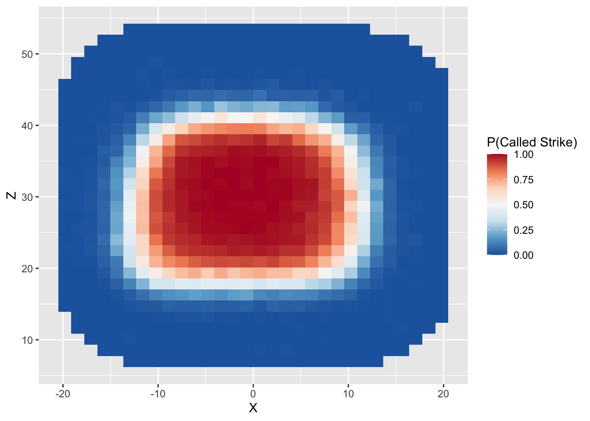

Problem Set 4
Visualizing the Strike Zone
In this part, we will continue to use heatmaps (introduced briefly in Lecture 2) to explore the strike zone in baseball. We will focus on data collected by PITCHf/x. At a high-level, PITCHf/x consists of a set of cameras installed at every ballpark which tracks the motion of each pitch. For more information about the system, check out this article by Mike Fast The data collected by PITCHf/x is then transmitted to the MLB Gameday application along with contextual information about the pitch. The data contains the measurements from the PITCHf/x system recorded in 2015.
- Read the data into a tbl called `pitches’.
> library(tidyverse)
> pitches <- read_csv("data/pitchfx_2015.csv")
Rows: 611943 Columns: 6
── Column specification ────────────────────────────────────────────────────────────────────────────
Delimiter: ","
chr (4): Description, COUNT, P_HAND, B_HAND
dbl (2): X, Z
ℹ Use `spec()` to retrieve the full column specification for this data.
ℹ Specify the column types or set `show_col_types = FALSE` to quiet this message.The columns are: * Description: Records the outcome of
the pitch (Called Strike, Swinging Strike, Foul, etc.) * X
and Z: the horizontal and vertical coordinates of the pitch
in inches. Note that the center of home plate corresponds to
X = 0. Note that the X coordinate are recorded
from the catcher’s perspective, with negative values on the left and
positive values on the right. In this coordinate system, a right-handed
batter will line up to the left (i.e. negative X values). *
COUNT: The ball-strike count for each pitch *
P_HAND and B_HAND: the handedness of the
batter and pitcher.
To visualize the strike zone, we are going to want to filter out only the called strikes and balls. Moreover, it will be helpful to convert the Description to numeric values (1 for called strikes, 0 for balls). Use the pipe operator,
filter(),mutate(), andcase_when()to create a new tblcalled_pitchescontaining only the called strike and balls and that includes a new column “Call” whose value is 0 for balls and 1 for called strike.To get started, we will create a plot and then add to it sequentially:
> g <- ggplot(data = called_pitches)- To estimate the probability of a called strike given the pitch
location, we will use a strategy similar to what we used to make
heatmaps in Lecture 2. Essentially, we
divide the plane into several small rectangular bins and compute the
proportion of called strikes within each bin. To compute this, we use
the
stat_summary_2d()function, which takes three aesthetics:
- x: variable on the horizontal axis
- y: variable on vertical axis
- z: variable that is passed to the summary function.
By default, stat_summary_2d() divides the plane into
rectangles based on the aesthetics x and y, and then computes the
average value of z for observations in the bin. We can add this layer to
our plot g as follows and obtain the following plot
> g <- g + stat_summary_2d(mapping = aes(x = X, y = Z, z = Call))
> g
- You’ll notice in the plot above that
stat_summary_2d()has added a legend to our plot. However, the title of the legend is a somewhat non-informative. The color scheme does not distinguish between different values particularly well.
> g <- g + scale_fill_distiller("P(Called Strike)", palette = "RdBu")
> g
- According to the official rule book, the strike zone is a
rectangular region that spans the width of home plate and extends
vertically from the batter’s knee to the middle of his chest. From the
plot above, we see that the region in which the strike zone probability
is higher than 90% is definitely not rectangular. To better visualize
the discrepancy, we can add another layer to plot which delimits an
approximation of the rule book strike zone. The code below does just
that. The
xminandxmaxarguments give the horizontal limits of the strike zone (in this case, the coordinates of the edges of the strike zone) and theyminandymaxarguments are the average vertical limits measured by PITCHf/x. Note: these values were pre-computed using a much larger dataset
> g <- g + annotate("rect", xmin = -8.5, xmax = 8.5, ymin = 19, ymax = 41.5, alpha = 0, color = "black")We can additionally make the plot a bit more attractive visually as follows:
> g <- g + theme_classic()
> g <- g + theme(axis.title.x = element_blank())
> g <- g + theme(axis.title.y = element_blank())
> g <- g + labs(title = "Estimated Strike Zone")
> g
NBA Team Shooting Statistics
The file “nba_boxscore.csv” lists detailed box score information about every NBA player in every season ranging from 1996–97 season and 2015-16 season. We will look at team shooting statistics over this 20-season span.
- Load the data into a tbl called
raw_boxscore.
Rows: 11237 Columns: 22
── Column specification ────────────────────────────────────────────────────────────────────────────
Delimiter: ","
chr (3): Player, Pos, Tm
dbl (19): Season, Age, G, GS, MP, FGM, FGA, TPM, TPA, FTM, FTA, ORB, DRB, AST, STL, BLK, TOV, PF...
ℹ Use `spec()` to retrieve the full column specification for this data.
ℹ Specify the column types or set `show_col_types = FALSE` to quiet this message.The column “Tm” lists the team on which each player played. We can
look at the relative frequencies of the teams using the
table() function. This function takes a vector and returns
the frequencies of each unique value.
> table(raw_boxscore[["Tm"]])
ATL BOS BRK CHA CHH CHI CHO CLE DAL DEN DET GSW HOU IND LAC LAL MEM MIA MIL MIN
347 350 72 183 101 335 34 359 356 354 321 355 359 319 347 319 271 348 337 328
NJN NOH NOK NOP NYK OKC ORL PHI PHO POR SAC SAS SEA TOR TOT UTA VAN WAS WSB
298 161 34 63 345 144 340 352 348 338 332 342 195 366 1047 309 80 333 15 Looking at the list of teams you may see a few that you don’t
recognize. For instance, there are 15 players listed as playing on
“WSB”. We can use filter() to take a closer look at these
players
> filter(raw_boxscore, Tm == "WSB")
# A tibble: 15 × 22
Season Player Pos Age Tm G GS MP FGM FGA TPM TPA FTM FTA ORB DRB
<dbl> <chr> <chr> <dbl> <chr> <dbl> <dbl> <dbl> <dbl> <dbl> <dbl> <dbl> <dbl> <dbl> <dbl> <dbl>
1 1997 Ashra… PF 25 WSB 31 0 144 12 40 1 1 15 28 19 33
2 1997 Calbe… SG 25 WSB 79 79 2411 369 730 4 30 95 137 70 198
3 1997 Matt … C 27 WSB 5 0 7 1 3 0 0 0 0 1 4
4 1997 Harve… PF 31 WSB 78 25 1604 129 314 28 89 30 39 63 193
5 1997 Juwan… SF 23 WSB 82 82 3324 638 1313 0 2 294 389 202 450
6 1997 Jaren… SG 29 WSB 75 0 1133 134 329 53 158 53 69 31 101
7 1997 Tim L… SG 30 WSB 15 0 182 15 48 8 29 6 7 0 21
8 1997 Gheor… C 25 WSB 73 69 1849 327 541 0 0 123 199 141 340
9 1997 Tracy… SF 25 WSB 82 1 1814 288 678 106 300 135 161 84 169
10 1997 Gaylo… SG 27 WSB 1 0 6 1 3 0 1 0 0 0 1
11 1997 Rod S… PG 30 WSB 82 81 2997 515 1105 13 77 367 497 95 240
12 1997 Ben W… PF 22 WSB 34 0 197 16 46 0 0 6 20 25 33
13 1997 Chris… PF 23 WSB 72 72 2806 604 1167 60 151 177 313 238 505
14 1997 Chris… PG 25 WSB 82 1 1117 139 330 58 163 94 113 13 91
15 1997 Loren… C 27 WSB 19 0 264 20 31 0 0 5 7 28 41
# … with 6 more variables: AST <dbl>, STL <dbl>, BLK <dbl>, TOV <dbl>, PF <dbl>, PTS <dbl>These fifteen players during the 1996-97 season on the Washington Bullets, which was renamed the Washington Wizards at the end of that season. There are a few other examples: VAN refers to the Vancouver Grizzlies who moved to Memphis and CHH refers to the original Charlotte Hornets franchise, which ultimately relocated to New Orleans.
One of the teams listed is “TOT”. This does not refer any specific team. Instead these rows record the total statistics recorded by a player if he played for multiple teams in a single season. For the purposes of understanding how team shooting statistics changed over time, we will not want to include these rows in our analysis.
- Use
filter(),group_by(),summary(), andmutate()to create a new tbl calledteam_boxscorethat does the following:
- removes the rows corresponding to player totals
(i.e.
Tm == "TOT") - groups the tbl according to Season and Tm. Note: it is important to group on season first and team second
- Computes the total number of made and attempted field goals, three pointers, and free throws, along with points scored by each team in each season.
- Adds a column for team field goal percentage (FGP), three point percentage (TPP), and free throw percentages (FTP).
- Ungroup the resulting tbl
`summarise()` has grouped output by 'Season'. You can override using the `.groups` argument.- Use
filter()to create a new tbl calledreduced_boxscorethat pulls out the rows ofteam_boxscorecorresponding to the following teams: BOS, CLE, DAL, DET, GSW, LAL, MIA, and SAS. Then create a plot of these teams’ three point percentage in each season. Be sure to color the points according to the team. What patterns do you notice?
Work with new data
Once you finish reviewing the material from earlier this week, we’d like you to use some of the tools we introduced in Lecture 4 to read in new data into R. Then, using the skills you’ve learned in the first four lectures, we’d like to you do some type of analysis with this data. It doesn’t need to be sophisticated – even making a few interesting visualizations or computing some interesting summaries is enough. We just want you to get some practice working with some data that you’ve collected yourselves!